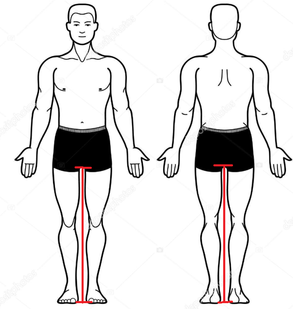
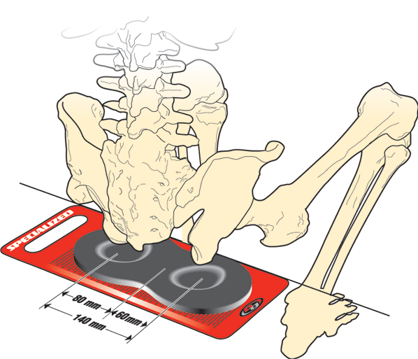
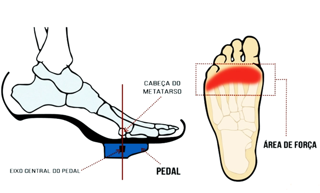
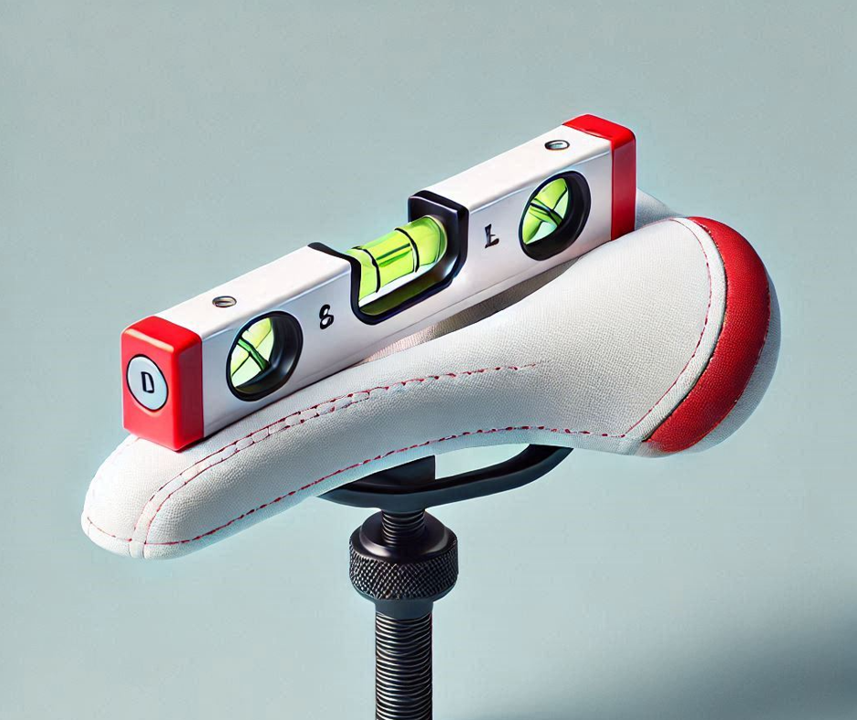
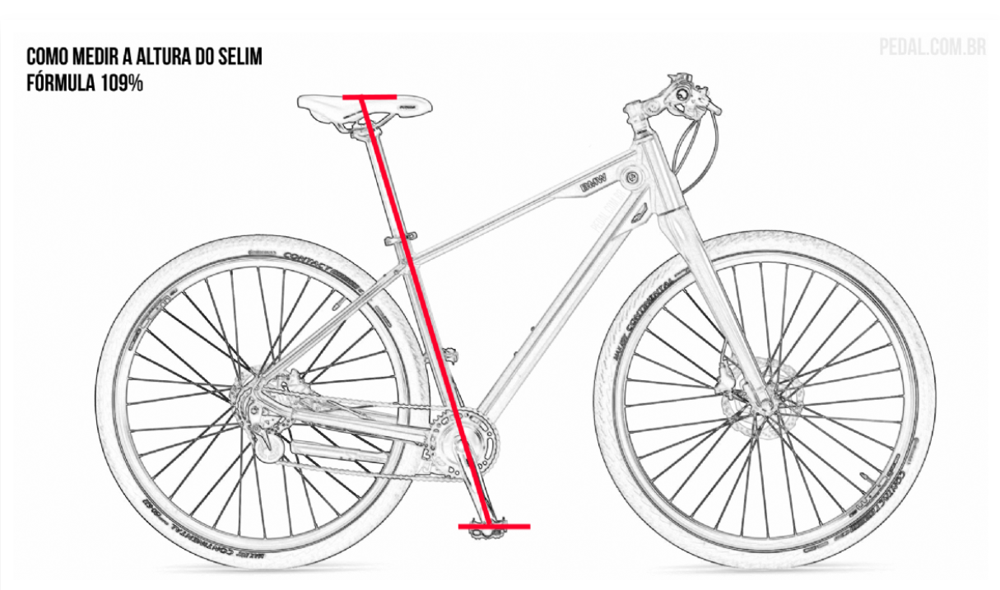
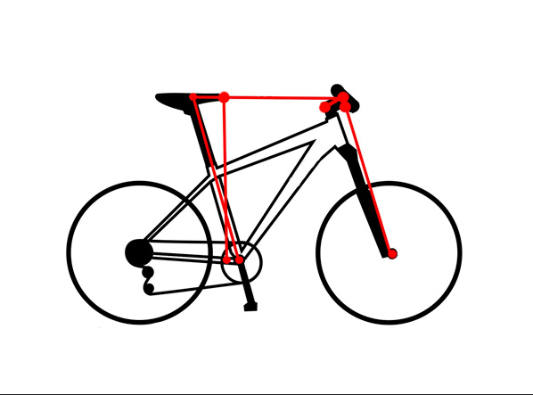
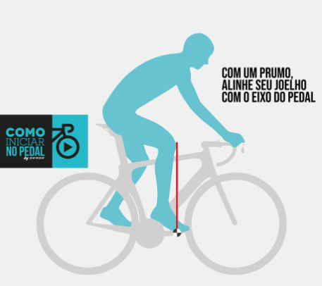
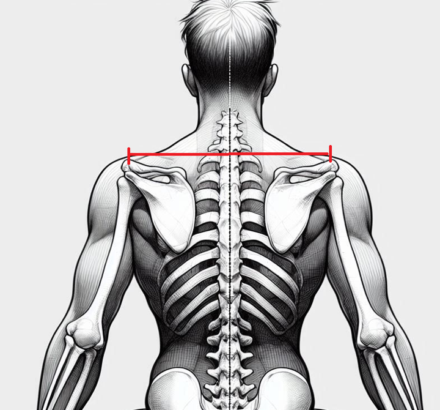

PRIMEIRO PASSO
Vamos Descobrir o seu tamanho de quadro ideal?

Cavalo é a medida interior da perna, começando da pélvis até os pés.
SEGUNDO PASSO
Vamos descobrir o Tamanho do seu selim ideal?

ísquios é um osso que constitui a zona inferior da pélvis.
TERCEIRO PASSO
Vamos descobrir a posição corretas dos pés nos pedais?

QUARTO PASSO
Vamos descobrir a inclinação correta do selim?

O SELIM preferencialmente deve ser alinhado em posição neutra, ou seja, nivelado em relação ao chão.
QUINTO PASSO
Vamos descobrir a altura correta do selim?

Essa será a distância entre o topo do seu selim e o centro do eixo do pedal da bicicleta, com ele na posição mais distante possível do selim. Para dar certo, é importante colocar o pedal na posição mais longe do selim, que é diferente do ponto mais baixo do pedal.
SEXTO PASSO
Vamos descobrir a altura do guidão?

A altura do guidão deve estar alinhada na mesma altura do selim. Existem algumas exceções, como atletas e pessoas com muita flexibilidade, que conseguem uma posição mais “agressiva”, de 0 até 6 graus negativos em relação ao selim.
Esse ajuste pode ser implementado quando o guidão permitir, com espaçadores, removendo ou adicionando-os até encontrar a altura adequada. Também é possível ajustar a mesa (suporte do guidão) em ângulos positivos ou negativos ou utilizar outro guidão com ângulos diferentes.
SÉTIMO PASSO
Vamos descobrir o alinhamento do joelho com o eixo do pedal?

O alinhamento do joelho com o eixo do pedal é importante para evitar danos aos joelhos e às articulações das mãos, pois essas articulações podem ficar projetadas fora da posição correta.
Para efetuar esse ajuste, deve-se regular a posição do selim em seu trilho, movendo-o para frente ou para trás de acordo com a sua necessidade.
OITAVO PASSO
Vamos descobrir o tamanho do guidão ideal?

Informe a distância entre os seus acrômios para calcular o tamanho ideal do guidão.